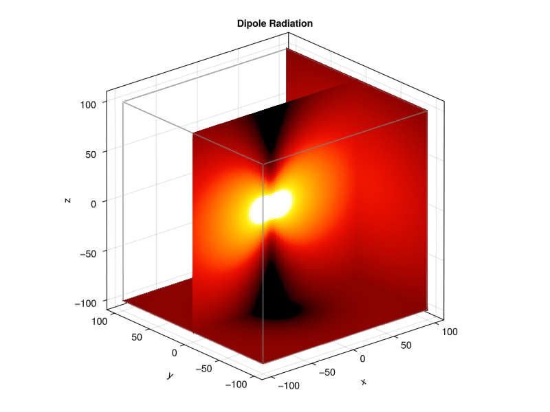
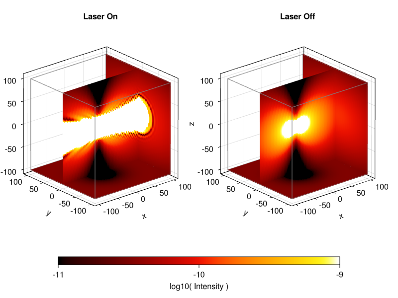

Single Atom
The special case of a single atom is the radiation pattern of a dipole, defined in electromagnetism books.
To create a single atom system, set $N=1$ and any other function should function accordingly. Note that all functions will return a Matrix of 1 element. This was an intentional decision to make internal functions interoperate effectively - if all inputs were a matrix, there was no ambiguity about the number of particles.
We need to use the Vectorial model to best visualize the radiation pattern. The code below is a minimal working example for checking the radiation pattern through a volume slice. The laser will be pointing in the negative x-direction, to make the visualization clearer.
using CoupledDipoles, Random
# cloud settings
N = 1
kR = 10
# laser settings
w₀ = 4π
s = 1e-5
Δ = 0.0
Random.seed!(2044)
single_atom =Atom(CoupledDipoles.Cylinder(), N, kR, kR)
laser = Laser(Gaussian3D(w₀), s, Δ; direction=[-1,0,0], polarization=[0,0,1])
problem = LinearOptics(Vectorial(), single_atom, laser)
βₙ = steady_state(problem)We had to apply :near_field regime manually to compute the intensity, because the default regime is :far_field. To evaulate the intensity in a certain spatial domain, we use a list comprehension.
x = LinRange(-100, 100, 100)
y = LinRange(-100, 100, 100)
z = LinRange(-100, 100, 100)
## this plot only works for near field regime
_vol = [laser_and_scattered_intensity(problem, βₙ, Matrix([X Y Z]');regime=:near_field)[1] for X ∈ x, Y ∈ y, Z ∈ z]
laserOn = log10.(_vol)
_vol = [scattered_intensity(problem, βₙ, Matrix([X Y Z]');regime=:near_field)[1] for X ∈ x, Y ∈ y, Z ∈ z]
laserOff = log10.(_vol)The package Makie is not a dependence of CoupledDipoles. Please, install it.
In the following, the figures represents the radiation in space for single atom and the color range was choosen ad hoc to higlight the expected dipole radiation pattern.
using ColorSchemes
using WGLMakie
WGLMakie.activate!()
## Example 1
let
fig = Figure(resolution = (800, 600))
ax_on = Axis3(fig[1, 1], title = "Dipole Radiation", aspect=:data)
on_plt = volumeslices!(ax_on, x, y, z, laserOff,
colormap=cgrad( ColorSchemes.linear_kryw_0_100_c71_n256, rev=false),
colorrange=(-11, -9)
)
on_plt[:update_yz][](100)
on_plt[:update_xz][](50)
on_plt[:update_xy][](1)
# save("dipole_radiation.png", fig, resolution = (800, 600))
fig
end
## Example 2
let
fig = Figure(resolution = (900, 800), background_color=:transparent)
ax_on = Axis3(fig[1, 1], title = "Laser On", aspect=:data)
ax_off = Axis3(fig[1, 2], title = "Laser Off", aspect=:data)
on_plt = volumeslices!(ax_on, x, y, z, laserOn,
colormap=cgrad( ColorSchemes.linear_kryw_0_100_c71_n256, rev=false),
colorrange=(-11, -9)
)
on_plt[:update_yz][](100)
on_plt[:update_xz][](50)
on_plt[:update_xy][](1)
off_plt = volumeslices!(ax_off, x, y, z, laserOff,
colormap=cgrad( ColorSchemes.linear_kryw_0_100_c71_n256, rev=false),
colorrange=(-11, -9)
)
off_plt[:update_yz][](100)
off_plt[:update_xz][](50)
off_plt[:update_xy][](1)
cbar = Colorbar(fig, off_plt; label="log10( Intensity )", flipaxis=false, vertical = false, width = Relative(4/5),ticks=WilkinsonTicks(3))
fig[2, :] = cbar
# save("on_off_radiation.png", fig, resolution = (800, 600))
fig
end